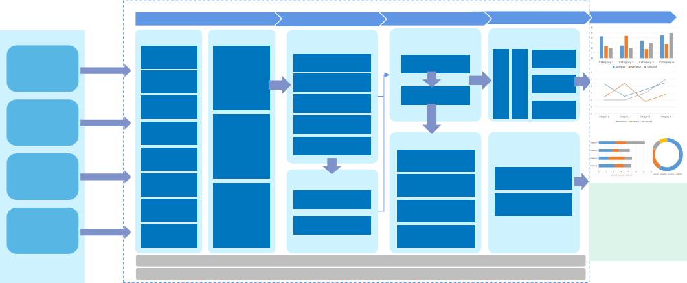

帮助企业实现申报自动取数 、 自动算税 、 申报表生成 、 完税凭证下载 、 归档 、 缴款...
1. 通过ERP ，报账及报表系统等集成 ，将涉税判定规则前置 ，并形成税务管理业务台账 ，根据科目、 台账自动生成工作底稿 、纳税申报表 ，利用系统加强税会差异核对和备案备查 文档管理 ，实现对全税种的自动化计税 、税金核算、 申报表生成及一键申报管理。
2. 支持历史申报数据获取、 当期初始化、 申报提交与缴款、 申报缴款凭证获取。
五、 纳税申报全流程、 智能化、 自动化管理

• 我公司申报团队提供现有申报接口 ， 且共同参与税局乐企平台申报接口的标准化开发。
1、 接口自动采集数据 ， 提升数据获取的效率和准确率；
2、 灵活的自定义报表功 能 ，支持算税公式个性化配置 ，实现自动算税、 自动生成申报表 ，支持表样统一维护 ，快速同步更新，无需逐一维护。
3、 支持申报确认；
4、 支持一键报税和批量 报税。
5、支持申报成功后自动 扣款；（三方协议、银行对公缴款接口）
业务台账
增值税业务台账
企业所得税业务台账
印花税合同业务台账
房产税业务台账
其他税费业务台账
纳税调整
税务调整
手工补录
税务规则管理系统管理
工作底稿
工作底稿生成
工作底稿复核
税会差异核对
增值税销项
税汇差异核对
增值税进项
税会差异核对
企业所得税
税会差异核对
……
数据获取
科目 余额表
科目 明细表
利润表
资产 负债表
费用报销明细
进项抵扣明细
合同明细
……
账务系统
费控系统
报表系统
发票系统
规则匹配
税务
规则匹配
税务
数据校验
数据复核
财务
核算数据
会计凭证
费用明细抵扣明细
财务
报表
进销发票
数据分析：
支持从不同维度对系统中所有数据（包括原始数据 ，税务数据及申报数据）进行分析及监控。
自动化计税及申报管理模块
业务台账 工作底稿
备案备查管理
备案文档管理
备查文档管理
计提
凭证
申报
回执
申报事项
记录
计提/申报
计
提
/
申
报
表
生
成
计
提
/
申
报
表
复
核
计提和申报
数据集市
数据分析